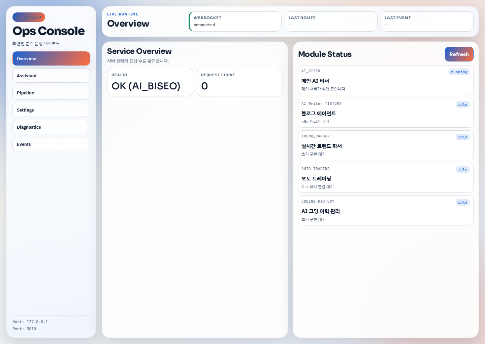
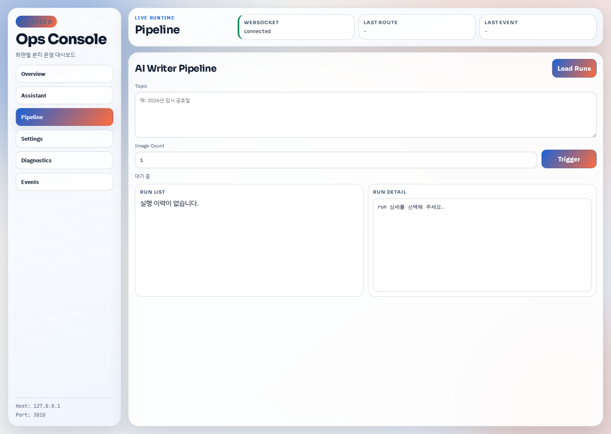
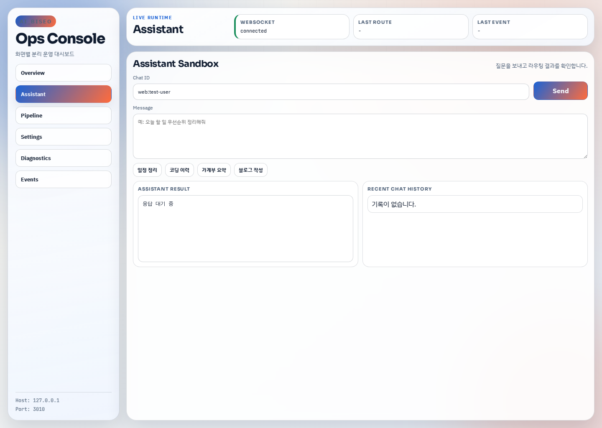

기능보다 운영 루프를 먼저 설계
AI 비서와 블로그 자동화를 따로 관리하면 상태 확인과 로그 추적이 분리됩니다. 이 저장소는 그 분산을 줄이는 데 초점을 둡니다.
Project story page
AI_BISEO는 AI 비서 응답, 운영 메모, n8n 자동화, 블로그 파이프라인을 흩어놓지 않고 하나의 콘솔과 하나의 기록 흐름으로 정리하기 위해 만든 저장소입니다. 기능 목록만 나열하는 대신, 왜 Docker 중심 운영 구조를 먼저 고정했고 이후 어떤 식으로 Ops Console과 공통 관리 레이어를 확장했는지 블로그 글처럼 읽히는 순서로 담았습니다.


응답 기록, 자동화 상태, 운영 메모를 따로 보지 않고 하나의 화면 언어 안에서 연결하는 구조를 목표로 했습니다.
AI 비서와 블로그 자동화를 따로 관리하면 상태 확인과 로그 추적이 분리됩니다. 이 저장소는 그 분산을 줄이는 데 초점을 둡니다.
응답 흐름, 자동화 실행 상태, 운영 메모를 같은 콘솔 안에서 읽을 수 있게 정리해 운영 피로를 낮췄습니다.
`docs/`와 Notion 기반 스토리 문서를 같이 두어 검색 유입 사용자가 구조를 빠르게 이해할 수 있게 만들었습니다.
Chapters
기능 소개보다 의사결정 순서가 먼저 보이도록, Notion 문서의 3단계 구조를 기준으로 프로젝트 흐름을 다시 정리했습니다.
실행 환경을 먼저 안정화해 AI 응답과 자동화 스크립트가 같은 기준 위에서 돌도록 만들었습니다.
상태 확인, 응답 기록, 운영 메모를 하나의 흐름으로 이어 주는 관리 화면을 중심에 뒀습니다.
운영 레이어를 먼저 세우고 그 위에 블로그 자동화 파이프라인을 확장해 재사용성을 높였습니다.
Runtime capture
검색이나 링크로 처음 들어온 사람도 프로젝트의 성격을 바로 파악할 수 있도록 실행 화면을 함께 배치했습니다.

Search intent
AI 비서 운영 대시보드, 블로그 자동화 프로젝트, Notion 운영 로그 같은 조합을 제목과 본문에 직접 반영했습니다.
AI assistant dashboard, blog automation nodejs, notion automation server 같은 검색어도 함께 대응합니다.
Open Graph 이미지와 FAQ 구조화 데이터를 넣어 링크 공유 시 프로젝트 성격이 바로 보이도록 구성했습니다.
FAQ
AI 비서 응답과 블로그 자동화 파이프라인을 같은 운영 콘솔에서 관리하기 위해 만든 Node.js 기반 프로젝트입니다.
n8n 연동, Notion 운영 로그, 상태 점검 스크립트, 블로그 자동화 파이프라인이 포함됩니다.
가능합니다. `npm install` 후 `npm run dev`로 로컬 개발 서버를 실행할 수 있습니다.